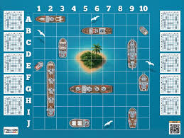

// Étudiante BTS SIO · Option SLAM · Développement & Data
Étudiante en deuxième année de BTS SIO, option SLAM, je me spécialise dans le développement d'applications et les bases de données, avec un intérêt particulier pour la data analyse. J'apprécie apprendre de nouvelles technologies et développer des solutions fiables et bien pensées.
Mon objectif est de construire une carrière dans la data analyse, en m'appuyant sur mes compétences en développement et en bases de données. Sérieuse, curieuse et déterminée, je souhaite acquérir une solide expérience professionnelle afin de développer mes compétences techniques et contribuer à des projets innovants.
EPSI Millénaire — Montpellier (34)
Spécialisation développement d'applications et bases de données, avec un intérêt pour la data analyse.
EPSI Millénaire — Montpellier (34)
Spécialisation développement d'applications et bases de données, avec un intérêt pour la data analyse.
My Digital School — Montpellier (34)
Première année de Bachelor en web-multimédia.
HTML5, CSS, PHP et WordPress pour concevoir et développer des sites et applications web, de la conception à la mise en ligne.
Python, Bash, PowerShell et SQL pour le scripting, la gestion de bases de données et l'analyse de données.
Jeu au tour par tour où chaque joueur cible la flotte adverse. Projet en binôme.
Oct — Déc 2025
Conception d'une base de données pour gérer réservations et disponibilités. Projet de groupe.
Nov — Déc 2025
Application de clavardage en ligne pour échanger des messages entre plusieurs utilisateurs.
6 — 26 janv. 2026
Site web complet avec espace public et back-office privé pour les employés.
22 janv. — 5 févr. 2026
Gestion de ressources universitaires (livres, salles, matériel) en programmation objet.
1 — 17 févr. 2026
Description courte du projet ici.
Mois — Mois 2026
Application de messagerie web complète : salons publics/privés, messages privés, système d'amis et notifications.
Depuis sept. 2026
Mon tableau de synthèse présente mes réalisations professionnelles et les compétences mobilisées au cours de ma formation en BTS SIO, option SLAM.
Ouvrir le tableau de synthèse (PDF)
EXOCOMS GROUP
Secteur événementiel
La veille technologique est une pratique régulière qui consiste à s'informer sur les dernières innovations du secteur. Elle permet d'anticiper les évolutions techniques, de découvrir de nouveaux outils et de maintenir ses compétences à jour.
Comprendre les menaces pour mieux protéger les données.
Les cyberattaques concernent aussi bien les entreprises que les hôpitaux, les mairies et les établissements scolaires. Je voulais comprendre leurs conséquences sur les services et les données personnelles, ainsi que l’évolution des méthodes utilisées par les attaquants.
Mon objectif était de suivre les menaces sur trois mois, de repérer les secteurs touchés et de comprendre comment l’IA intervient dans les tentatives de fraude. Je m’intéressais aussi aux moyens de protection et au rôle des organismes comme l’ANSSI.
J’ai associé les alertes automatiques de Google Alerts à des recherches dans les rapports officiels. Feedly regroupait les actualités, tandis que des filtres et des libellés Gmail m’aidaient à trier les informations. J’ai ensuite classé les éléments retenus par thème et par date.
Je me suis appuyée notamment sur l’ANSSI, Cybermalveillance.gouv.fr et Vie-publique.fr, avec des médias spécialisés pour suivre l’actualité. Les références et les outils utilisés sont présentés dans mon compte rendu.
J’ai mieux compris les différences entre rançongiciel, vol d’identifiants et hameçonnage, ainsi que la place de l’IA dans les arnaques. Cette démarche m’a aussi permis de travailler la recherche d’informations, le tri des sources et la synthèse, au lieu de simplement accumuler des articles.
La sécurité fait partie du travail de développement : les comptes et les données des utilisateurs doivent être protégés. Je retiens surtout l’importance de la vigilance face aux messages suspects et de la double authentification. Ce premier bilan porte sur une période limitée ; poursuivre la veille permettra de suivre l’évolution des menaces.
La démarche, les sources et l’analyse dans mon compte rendu.
Une question ? Une opportunité ? Envoyez-moi un message !

1 octobre — 15 décembre 2025
À tour de rôle, chaque joueur indique à l'autre sa frappe en désignant une position. Lorsqu'un navire est touché, l'emplacement devient négatif. Si le coup tombe à l'eau, il est symbolisé par un X. La victoire est obtenue quand l'un des joueurs a coulé toute la flotte adverse. Projet en binôme.
Novembre — 16 décembre 2025
Conception et mise en œuvre d'une base de données pour gérer les réservations et les informations sur les gîtes. Projet de groupe.
6 — 26 janvier 2026
Développement d'une application de clavardage en ligne permettant l'échange de messages entre plusieurs utilisateurs. Projet de groupe.
22 janvier — 5 février 2026
Développement d'une application web en PHP, SQL, HTML et CSS, comprenant des fonctionnalités pour le public et pour les employés (privées). Projet de groupe.
1 — 17 février 2026
Programme pour gérer des ressources variées dans une université (livres, matériel, salles). Les utilisateurs peuvent réserver et suivre la disponibilité selon des règles. Projet de groupe, de la logique simple jusqu'à la POO et la persistance des données.
2025 — Secteur événementiel
Stage au sein du secteur événementiel, durant lequel j'ai pu participer à :
23 avril — 12 juin 2026 · Exocoms Group
Durant ces 7 semaines chez Exocoms Group, j’ai travaillé sur le site e-commerce Monétique.fr, consacré aux solutions de paiement et hébergé sur Odoo SH. Mon objectif était de créer une vitrine adaptée à l’entreprise et de mettre en valeur son catalogue de 80 produits.
Ce stage m’a permis de découvrir le développement de modules Odoo et de suivre un projet depuis la conception jusqu’au déploiement. J’ai aussi appris à mieux organiser mon travail en autonomie, à chercher dans la documentation et à échanger avec mon tuteur à distance.
Outils utilisés : Odoo SH · Python · XML QWeb · CSS · JavaScript · Figma · Git / GitHub
Depuis septembre 2026 — Projet personnel
Une vraie plateforme de messagerie que je développe en dehors des cours : création de salons publics et privés, conversations privées, système d'amis avec demandes et notifications, gestion des rôles utilisateur/administrateur. J'ai aussi travaillé la sécurité : requêtes préparées avec PDO, mots de passe hashés, protection CSRF et sessions sécurisées. C'est le projet dont je suis la plus fière pour l'instant.
Mois — Mois 2026
Description complete du projet : contexte, objectif, ce que tu as fait.